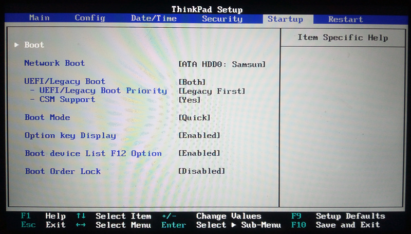
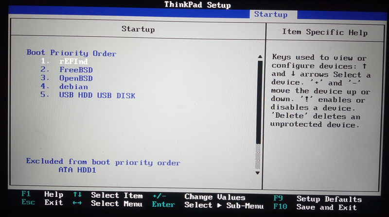
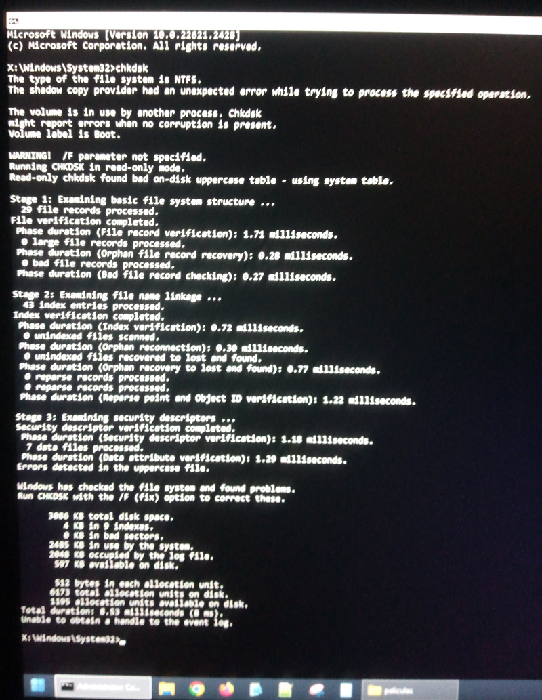
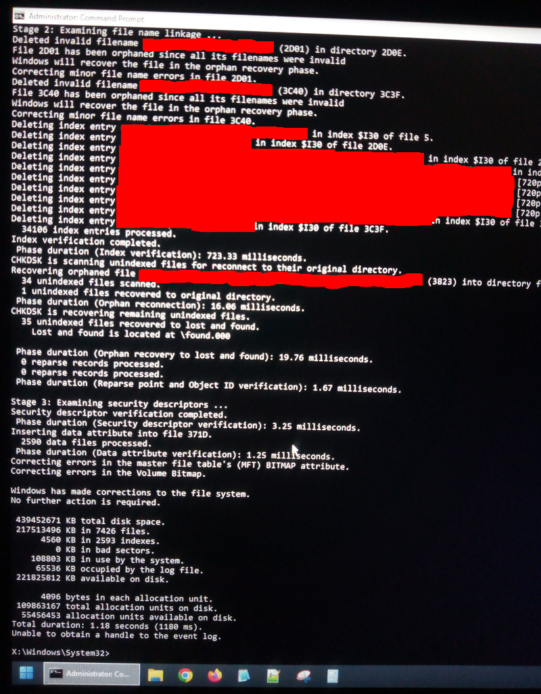
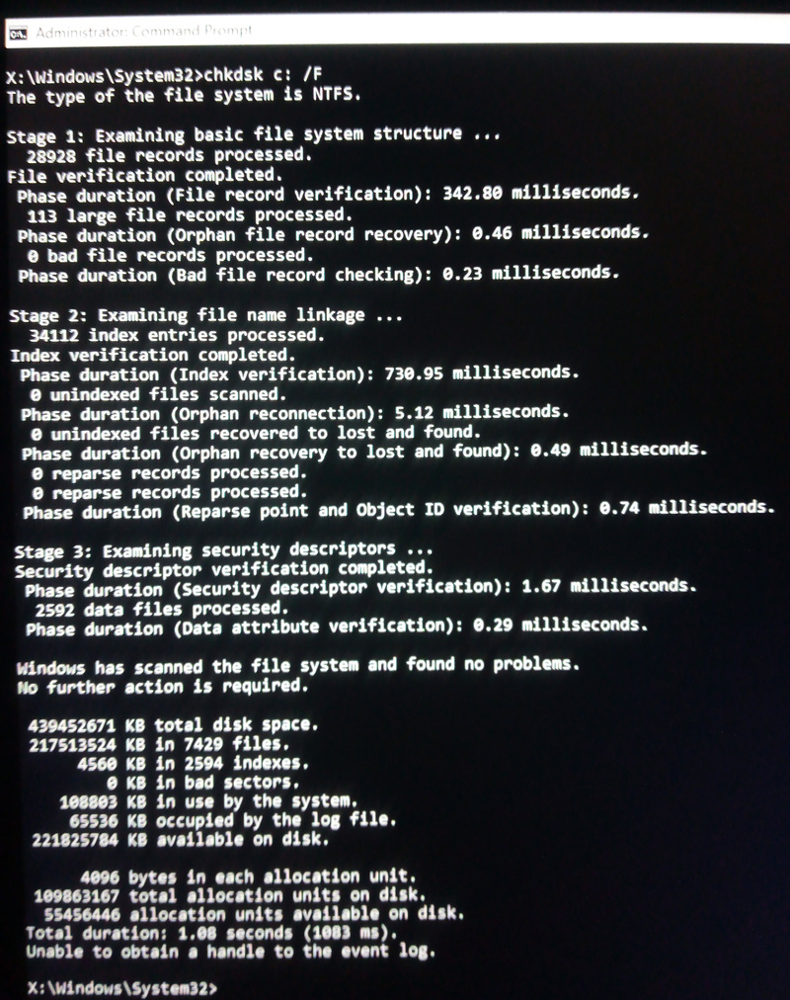
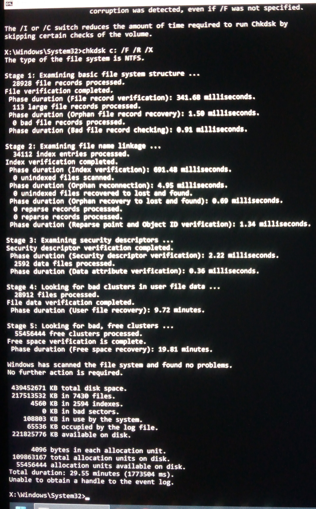

Contexto
Actualmente tengo instalados tres sistemas en mi equipo: Debian, FreeBSD y OpenBSD.
Para poder acceder archivos multimedia que no requieren seguridad elegí utilizar una partición NTFS, ya que los sistemas mencionados previamente no manejan los mismos filesystems.
El más limitante es OpenBSD. Las opciones de sistemas de archivos soportados se pueden encontrar en la página del manual de fstab, donde entre las listadas, las relevantes en este caso son FAT32 y ext2, los no cuales elegí por no tener journaling.
Pasando a FreeBSD. Las opciones de archivos soportados aparte de las nativas se pueden encontrar en la página del handbook, capítulo Other File Systems. Mismo caso, FAT32 y ext2 presentes, pero sin journaling.
Por último, Debian. En la documentación del kernel linux abundan los distintos tipos de filesystems soportados, pero a esta altura ya queda claro que el problema son los filesystems soportados por FreeBSD y OpenBSD.
Pero en todos los sistemas se encuentra empaquetado ntfs-3g, el cual
permite lecturas y escrituras en sistemas de archivo NTFS que soporta
journaling, por lo que me decidí por este al momento de crear la partición
data que contendrá archivos multimedia a compartir entre los tres sistemas.
Problemas de lectura
Todo funcionaba de maravilla hasta que el otro día, al querer borrar un archivo
de la partición data (NTFS) obtuve el error:
$ rm /mnt/data/path/to/file
rm: /mnt/data/path/to/file: No such file or directory
y al intentar realizar operaciones sobre el mismo:
$ mv /mnt/data/path/to/file /mnt/data/path/to/file/bad-file
mv: rename /mnt/data/path/to/file to /mnt/data/path/to/bad-file: Input/output error
Revisando la salida de dmesg:
$ doas dmesg
...
WARNING: FUSE protocol violation for server mounted at /mnt/data: file has different inode number and nodeid. This warning will not be repeated.
De aquí que ya está claro que algo está pasando con la partición.
Lo primero que hice fué intentar buscar entre los comandos instalados por el
paquete fusefs-ntfs, nombre dado en FreeBSD a ntfs-3g a ver si alguno podría
servir para solucionar el problema:
$ pkg info -l fusefs-ntfs | grep bin/
/usr/local/bin/lowntfs-3g
/usr/local/bin/ntfs-3g
/usr/local/bin/ntfs-3g.probe
/usr/local/bin/ntfscat
/usr/local/bin/ntfscluster
/usr/local/bin/ntfscmp
/usr/local/bin/ntfsfix
/usr/local/bin/ntfsinfo
/usr/local/bin/ntfsls
/usr/local/bin/ntfsrecover
/usr/local/bin/ntfssecaudit
/usr/local/bin/ntfstruncate
/usr/local/bin/ntfsusermap
/usr/local/bin/ntfswipe
/usr/local/sbin/mkntfs
/usr/local/sbin/ntfsclone
/usr/local/sbin/ntfscp
/usr/local/sbin/ntfslabel
/usr/local/sbin/ntfsresize
/usr/local/sbin/ntfsundelete
De todos los anteriores los más relevantes me parecieron ntfsrecover y
ntfsfix.
Ya leyendo la página del manual de ntfsrecover hay indicaciones de que el comando no será tan útil como su nombre pareciera indicar:
Currently, ntfs-3g does not log updates, so ntfsrecover cannot be used to restore consistency after an unfortunate event occurred while the file system was updated by Linux.
Probando con ntfsfix no estamos mejor:
$ doas umount /mnt/data
$ doas ntfsfix /dev/gpt/data
Mounting volume... OK
Processing of $MFT and $MFTMirr completed successfully.
Checking the alternate boot sector... OK
NTFS volume version is 3.1.
NTFS partition /dev/gpt/data was processed successfully.
$ doas /usr/sbin/mount_ntfs-3g -o rw /dev/gpt/data /mnt/data
$ rm /mnt/data/path/to/file
$ doas dmesg
...
WARNING: FUSE protocol violation for server mounted at /mnt/data: file has different inode number and nodeid. This warning will not be repeated.
ya que este comando no se soluciona el problema.
Hiren’s BootCD PE: chkdsk desde windows
Ya que ntfs-3g no soluciona el problema otra alternativa que se me ocurre es probar el comando para reparar particiones de windows creado por microsoft: chkdsk.
El problema es que para ello necesitamos ejecutarlo desde un sistema operativo windows. El sistema no está instalado en el equipo ni tengo deseos de instalarlo. Por otro lado, no es una opción conectar el disco duro a otro equipo, ya que esto implicaría estar desarmando el equipo cada vez.
Solución: ejecutar windows desde un pendrive.
Esto es posible si se utiliza una versión Windows PE (WinPE) que permita
ejecutar el comando chkdsk para corregir problemas en la partición sin tener
que instalar windows en el equipo:
Windows PE (WinPE) is a small operating system used to install, deploy, and repair Windows desktop editions, Windows Server, and other Windows operating systems
La contra de esto es que microsoft no provee una imagen para copiar a un pendrive o una imagen iso, por lo que es necesaria otra alternativa.
Por eso se utilizará Hiren’s BootCD PE (Preinstallation Environment), el
cual en su página de descargas brinda un iso que puede iniciar un sistema
windows 11 desde el pendrive y allí tenemos disponible el comando chkdsk.
Crear pendrive con hiren
A continuación los pasos para crear un pendrive booteable a partir del iso.
-
Descargar iso de Hiren’s BootCD PE de la página de descargas. La versión actual es
Hiren's BootCD PE x64 (v1.0.8).$ fetch 'https://www.hirensbootcd.org/files/HBCD_PE_x64.iso' -
Se verifica el iso.
$ [ "$(sha256 -q HBCD_PE_x64.iso)" = "8c4c670c9c84d6c4b5a9c32e0aa5a55d8c23de851d259207d54679ea774c2498" ] && echo "OK" || echo "FAIL" OK -
Se crea partición tabla de partición GPT en el pendrive para que pueda bootear vía UEFI.
$ doas gpart destroy -F da0 da0 destroyed $ doas gpart create -s GPT da0 da0 createdNOTA: el dispositivo del pendrive en FreeBSD es reconocido como
/dev/da0; por más información ver la sección USB Storage Devices en el FreeBSD handbook33]. -
Se crea una partición EFI utilizando todo el espacio disponible del pendrive en la que se copiarán los archivos del iso.
$ doas gpart add -t efi da0 da0p1 addedEn mi caso esto es razonable ya que el pendrive es de 3.6GB y el iso de 3.2GB. En caso de querer fijar la tamaño de la partición se puede utilizar el parámetro
-s size:$ doas gpart add -t efi -s 3584M da0 -
Se formatea la partición recién creada usando FAT32.
$ doas newfs_msdos -F 32 -L HBCD_PE da0p1 /dev/da0p1: 7862272 sectors in 122848 FAT32 clusters (32768 bytes/cluster) BytesPerSec=512 SecPerClust=64 ResSectors=32 FATs=2 Media=0xf0 SecPerTrack=63 Heads=255 HiddenSecs=0 HugeSectors=7864240 FATsecs=960 RootCluster=2 FSInfo=1 Backup=2 -
Se monta el iso.
Para ello, primero debemos crear un memory disk el cual permitirá acceder al contenido del archivo mediante un archivo de dispositivo.
$ doas mdconfig HBCD_PE_x64.iso md0Se crea el directorio donde se montará el cd y se monta el memory disk asociado al archivo.
$ doas mkdir /mnt/iso $ doas mount -t cd9660 /dev/md0 /mnt/iso -
Se monta la partición efi del pendrive.
Primero se crea el punto de montaje y luego montamos la partición efi.
$ doas mkdir /mnt/usb $ doas mount -t msdosfs /dev/da0p1 /mnt/usb -
Se copia el contenido del iso a la partición efi
$ doas cp -a /mnt/iso/* /mnt/usb/ -
Una vez terminada la copia se desmontan los dispositivos y se libera el memory disk:
$ doas umount /dev/da0p1 $ doas umount /dev/md0 $ doas mdconfig -d -u md0
Ahora se reinicia y a probar.
Ejecución de chkdsk
Antes de poder bootear el pendrive hay que asegurarse que el sistema permita bootear UEFI y Legacy (solo UEFI no me funcionó, quizás algún error al momento de crear el pendrive) y que sea posible bootear desde el pendrive:


Luego en windows pe, abrimos una consola y ejecutamos chkdsk C: en modo
read-only, lo cual muestra que hay errores.

Luego ejecutamos chkdsk C: /F

Lo hacemos una segunda vez

y aquí vemos que no hay más errores.
Por tercera vez ejecutamos chkdsk /F /R /X, lo cual según la documentación
sería un análisis más exhaustivo.

Tampoco encontró errores, pero demoró un tiempo considerable.
Conclusión
Al final, el sistema de archivos NTFS que elegí ya que soporta lectura y escritura con journaling en Linux, FreeBSD y OpenBSD resulta que es propietario y ante problemas estos deben arreglarse utilizando windows.